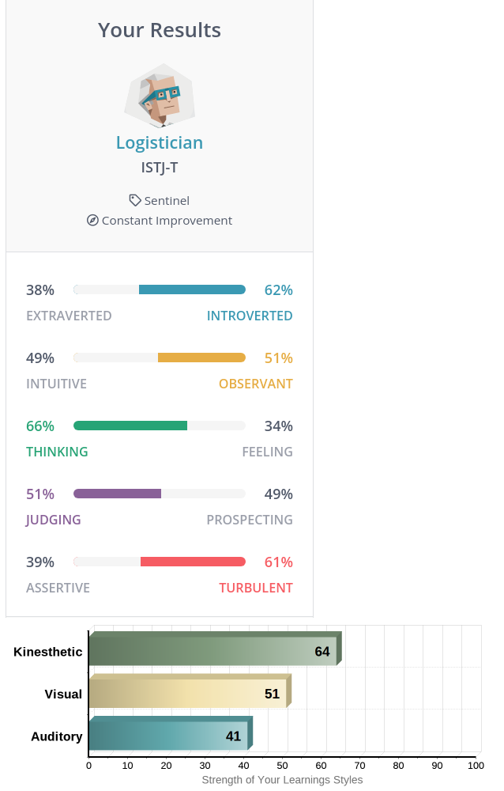
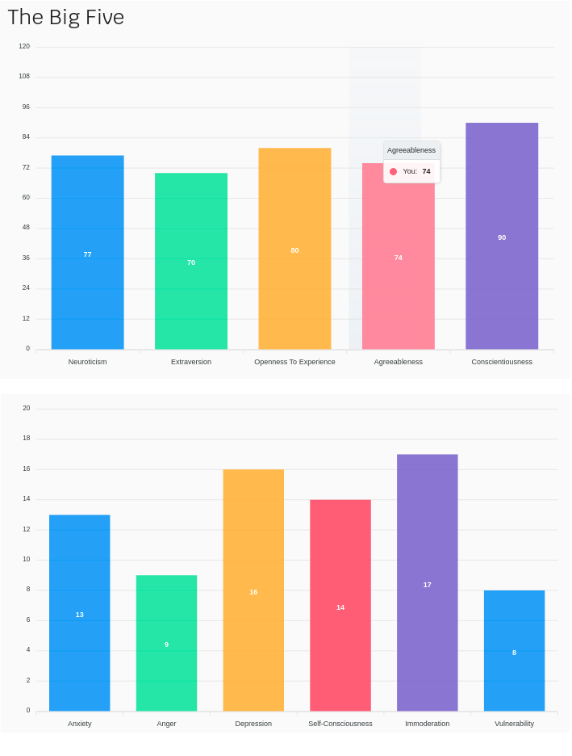

Who am I?

- Bo Kim Tran
- Student ID: s3954173
- Student Email: s3954173@student.rmit.edu.au
Personal Information
- I was born in Australia but I am half-Chinese and half-Vietnamese
- In 2019, I undertook a traineeship in Certificate III in Business
with Apprenticeship Support Australia where I have been working
as a Client Service Officer for almost 2.5 years.
- I'm capable of speaking Cantonese which has allowed me communicate easily
with a larger variety of clients.
- I have a pet dog named Vilo. He is a Cavoodle (cross between Poodle and
Cavalier King Charles Spaniel) and is the cutest thing to enter my life
since COVID has happened! I have spoiled him rotten so now he stalks me
around the house seeking my love and attention.

Interest in IT
I am most interested in software development and cybersecurity.
However, this is not to say that I don't have interests in other fields of IT.
For a long time now, I've immersed myself with all kinds of different fields of
IT since high-school. From building computers, local network management,
game creation, CGI, programming, the exploration of IT already started early
on in high school. Strangely enough, most of this exploration was done without
having any real interests in IT at the time. Still, I believe the early exposure
and exploration was vital to the moment that ignited my passion for IT.
The pursuit of my passion in IT was ignited in Year 12 when I attended an IT
career seminar held at RMIT. A number of companies attended where they exposed
me to new fields of IT that I was not aware of at the time. Machine learning,
AI, cybersecurity and robotics were few examples of IT fields I learnt about.
But the one company that inspired me in the end was WiseTech Global and its CEO.
He inspired me with his success story, his interns' success stories, his
influence/contributions to the world and finally, his vision and goals for IT.
He demonstrated such a passion in IT that I had never imagined coming from a
CEO of a logistics company. He showed he was willing to go the extra mile to
not only invest in IT within in his own business, but provide opportunities and
resources to others such as myself so that we could build up to a career in IT
and join the ongoing revolution of IT. Such passion and dedication to IT was the
final spark that ignited mine. Since then I've been constantly trying to keep up
with the rapidly developing scene of IT and every new thing that emerged.
For cybersecurity, the main motivation admittedly originated from the
prospects of high pay and the romanticism of being a computer hacker.
However, after researching the industry and roles, I became drawn and
motivated to the concept that I could be learning vital skills/knowledge to
protect myself, my family and other people from cyber-attacks or scams.
I also liked the idea of gathering information like a detective and having the
legal immunity (when granted by the client) to attempt infiltration into a
physical workplace or into their systems.
The interest in software development grew from my own experience programming
with Python and developing a number of small projects over the years since
graduating from high-school. My projects ranged from a simple calculator to a
budgeting app that keeps track of finances and provides information to help an
end-user target particular issues with their budget.
I enjoyed the problem solving, creative design, experimentation and learning
aspects that came from this experience.
Why did I choose to come to RMIT?
I decided to go to RMIT because I believed it would be the place to provide
me the best education and industry connections that I need to succeed.
My choice was further cemented from a work colleague who recommended the
course to me after graduating from the Bachelor of IT at RMIT.
What do I expect to learn during my studies?
I expect I will draw valuable information and knowledge from my teachers and
industry professionals. I want to learn from their experiences, the challenges
they face, the career path they have taken so that I can continue my
exploration into new pathways that I have yet to discover.
It will also give me insights in the industry that I can infer whether or
not I'll enjoy certain career paths. I'd like to learn industry standard
skills that will boost my prospects to achieving a high paying career and
even the possibility of starting my own business.
Finally, I want to develop my snetworking skills so that I can create
multiple connections in the industry for more career opportunities.
Ideal Job
Position description and why I find it appealing
The Position's role and duties primarily revolves around ensuring the safety
and security of the business' network and data. It seems to be a role where
you would devote most of your skills and knowledge to monitoring, creating
strategies or utilising tools to prevent security issues/attacks or formulate
a quick response. When you're not doing performing those duties,
you're also promoting, training and teaching others in the organisation
about the threats and risks that are current and how to respond/prevent
falling victim.
I find the role appealing in general for 3 reasons:
- The role description and mission strongly aligns with my goal to
utilise my skills to protect myself or others from online threats.
This role allows me to heavily focus on the Security Operations of a
business and also have opportunities to teach others so that they can
then protect themselves and those they know.
- SEEK is a company with a good reputation. Having visited their office in person, I was very impressed with their mission statement, their facilities and overall company culture. They provide lots of employee benefits and have great values
that align with my moral compass.
- Most roles within cybersecurity have an average salary of $100k which is an amount I am ambitious to achieve and earn in my career.
Skills, qualfications and experience required
Skills – Soft skills required would include communication, attention-to-detail, problem-solving and flexibility.
Communication skills in this role are required as you will be liaising with both internal and external stakeholders. You'll need to build a relationship within the business to effectively promote the security culture and with external
stakeholders for excellent client service overall.
Security monitoring will require great vigilance and attention-to-detail in order to catch any security threats and develop an appropriate response.
Problem-solving and flexibility are intertwined because security threats are always changing so you'll need to constantly keep up to date to effectively develop the strategies and responses to combat them. It is also unlikely for one to
deal with the same exact scenario so it's especially crucial to resolve cases quickly, otherwise the severity of it will increase exponentially.
Qualifications - No formal degree/certification is required but it will prove useful to being a desirable candidate.
Experience - Past experience in the cybersecurity field and crucial understanding of different networking tools and OS are all required. Extra experience with Python, PowerShell, DevOps on AWS platforms are desirable but not required to perform
the role.
Skills, qualfications and experience I currently possess
Skills - My role as a Client Service Officer has the same demands for soft skills so I believe I already have these skills to meet the requirements of a Security Analyst. It would be easily transferrable and applicable despite being in
different fields.
Qualifications - I currently don't have any formal qualifications to make me desirable as a Security Analyst, however working towards the Bachelor of IT and TCM Security's "Practical Network Penetration Tester (PNPT) Certifications can prove to
make me a highly desirable candidate.
Experience - I also have no formal experience that can be applied except for having stakeholder engagement and relationship building experience.
My plan to becoming qualified for this position
I plan to achieve the qualifications and experience I need by first completing the Bachelor of IT and choosing units that help me specialise into this role. If an opportunity for an internship or career within cybersecurity is available, I will
immediately apply for the opportunity. After completing the Bachelor of IT, I plan to complete additional certifications like the mentioned PNPT certification so I become a better candidate.
Personal Profile


What do these tests mean to me?
The results to me do not mean much. Though general parts of it are somewhat accurate, I feel that it's ultimately ill advised to simply determine one's personality based on tests. There's also the potential that one will act purely based on
what their personality types are and how they are generalised. Overall, I think it's an outdated method for employers to use and I'm surprised that most have not realised the downsides to using personality tests.
How do these results influence my behaviour in a team?
Having current experience with working in a team and being self-aware of my personality, the results won't influence my behaviour greatly within a team. However, I could still use the results as reference against other people's personality. I
can develop a general understanding on ways I could tweak my behaviour to ensure smooth co-operation amongst. Leadership strategies and styles could also be developed to effectively manage and delegate duties among the team. In general, the
results would be utilised as a means to 'spec' my behaviour to ensure optimised teamwork. But the core elements of my personality such as logical thinking problem solving will remain dominant.
How would I take my results into account when forming a team?
Firstly I would be looking for a blend of different personality types that still share some similarities. Generally, most would look for a team of very similar and like-minded members. However, experience has taught me such an approach limits
the team's capabilities, possibilities and even effectiveness in completing a project. By having a diverse set of members, the team have more avenues in discussion and can develop a variety of strategies and plans to approach the project.
However, I would also avoid having too much of a diverse team as ultimately this hinders the team's ability to agree on things in a project. In terms of similarities, there are 4 aspects experience has taught me to be the most crucial for a
properly functioning team. Great values, work ethics, attendance and communication skills. Ultimately, if a member proves to be lacking in these aspects, I would hesitate to be in a team with them.
Project Idea
Overview
My project idea is to develop a Study Assist App serving as a centralised hub of multiple functions. It will be primarily aimed towards university students such as myself, but the main purpose is consolidating functions I use already for
university/study into one place. These functions refer to apps/features such as a calendar, timetable, reminders, follow ups, notetaking, etc. The app design would be simple and intuitive for any end-user to immediately start using, yet leave a
few options for customisability. Important links or app shortcuts can be added by the end-user where it cannot be embedded inside the app, which still effectively serves the main purpose of centralised functions. Finally, the app would allow
for new functions to be integrated in the future and continue improving the app. In a sense, the app will be designed like LEGO, using simple varied building blocks to create one complex object.
Motivation
The motivation for this project originates from some of the small annoyances I face. Time-management, note-taking and listening to lectures/music are some of the aspects of being a student. Though we have a variety of apps available dedicated
to one of these aspects, currently there aren't any apps designed to include all these aspects together. Whilst I like having the app choice variety, switching between apps to use certain functions does become tedious and time-consuming.
Attempting to sync the data across the apps though not impossible, is again tedious, time-consuming and difficult. My project aims to resolve these issues so that students can spend more time on studying and their assignments. I believe
students may find this project useful since it will serve as an all-in-one package where they can utilise it for quick time-management, simple note-taking, or a media player.
Description
Core features of the app will include functions for time-management, note-taking, media player and a contact book. The layout of the app will be simple, in a grid format with different cells containing a function. Purpose of this design is to
allow users to intuitively start using the app, customise the layout and functions included, and finally allow potential for future functions to be implemented. The app design will follow the analogy of LEGO, use simple blocks to make a complex
object.
Time-management functions will be synced to avoid conflicting/missing tasks, reminders or dates. Some of theses functions include:
- A calendar providing a wholistic view of upcoming important task and
assignment due dates. The calendar view can change between weekly,
fortnightly or monthly view and has the capability to set appointments.
- A timetable to set a weekly or fortnightly recurring schedule and show locations for tasks or classes.
- Reminders and follow ups where a user can set reminders for upcoming tasks or assignment due dates. They can also set follow up tasks which could be used as milestones for assignments and keeping track of where you should be at.
- Finally, an assignment tracker which provides a wholistic representation and timeline of a progress on an assignment. It would use a progress bar to show how far a user is to completing the assignment. Further, by using colours and visual
cues to inform a user how close they are to a due date, this can be a great psychological means to motivate users to complete their tasks on time.
The note-taking function would have a minimal design and functionality. It would contain a simple text box that you can write to and save to a rich text file on your computer. The main purpose for this function is to create quick notes that can
be saved later to organise on a user's preferred note-taking app. There's also the option to convert the text file into a PDF for a user to also print. Ideally this function would communicate with a student's main note-taking app such as
OneNote, however, there are a lack of modules/APIs designed for such a purpose of reading/writing the text file to another app.
The media player function works using the main feature of locating mp3/mp4 files and playing them using VLC or similar media player apps. Furthermore:
- A user can toggle between playing audio or video which proves useful in switching between listening to music/podcasts or watching a lecture/tutorial.
- A dedicated folder would be used for audio/video file browsing.
- Playlists can be created and played.
- YouTube videos or Spotify songs can be converted and downloaded into mp3/mp4 files using their URLs.
A contact book function can be used as a basic means to store a database of contact details. This would be represented as a simple table containing a contact name, email, phone number and role. This would prove useful to refer to when emailing
other students or teachers, or if you needed to refer to a teacher's role to track down the appropriate individual to contact for certain queries.
A final feature to be added is the ability to store links or app shortcuts. This provides the user the ability to quickly access other apps or useful links where the option to integrate them within the app is not possible.
Tools and Technologies
Requirements for software are minimal as I would be using Python as the main programming language for this project. Hardware requirements are also minimal, only requiring a working laptop or PC to complete the project and deploy it. However, if
I was to add an additional feature such as a chatroom, than I would require another device to become a server. This device could either be another PC, Raspberry Pi or Arduinos depending on how far the project grows. Understanding and knowledge
of SQL is crucial for the contact book function which will be using databases. Within Python, there will be a number of modules to learn and utilise to fulfil the different functions and features being implemented. Third-party modules to be
explored in particular will be PyQt5 and Tkinter for GUI design, and spotify-dl, youtube_dl, vlc, pafy for the media player function.
Skills Required
Programming skills will be crucial to developing the project. In particular, intermediate experience in Python would be required as the project deals with concepts such as GUIs and third-party modules. Regarding third-party modules, being able
to quickly read and interpret the documentation will be a useful skill to implement the modules as soon as possible. Basic knowledge and skills with SQL and database concepts will be applied. Finally, design skills will be needed to develop the
UI, database and functionality of the app. This is to ensure the app follows the principles of simplicity and intuitiveness. Most of the skills required are feasible. Currently I have some prior experience developing python apps, just not to
this scale. The "Practical Database Concepts" class is already teaching me the skills/knowledge to use SQL and develop databases.
Outcome
If this project was developed successfully, it could see some potential to be deployed. If this becomes possible, I would be the first to use and test it out during my university studies. If others are also interested, I may also release it to
them and I can request feedback from these users to further enhance and update the app. The project would resolve the main motivation which was to centralise functions university students already use on different apps, into a singular app. It
would alleviate the issues of time, weariness and difficulty attempting to sync and use different apps. Unfortunately, important functions like communication and emails can't be implemented unless I develop my knowledge of python and networking
to be advanced.